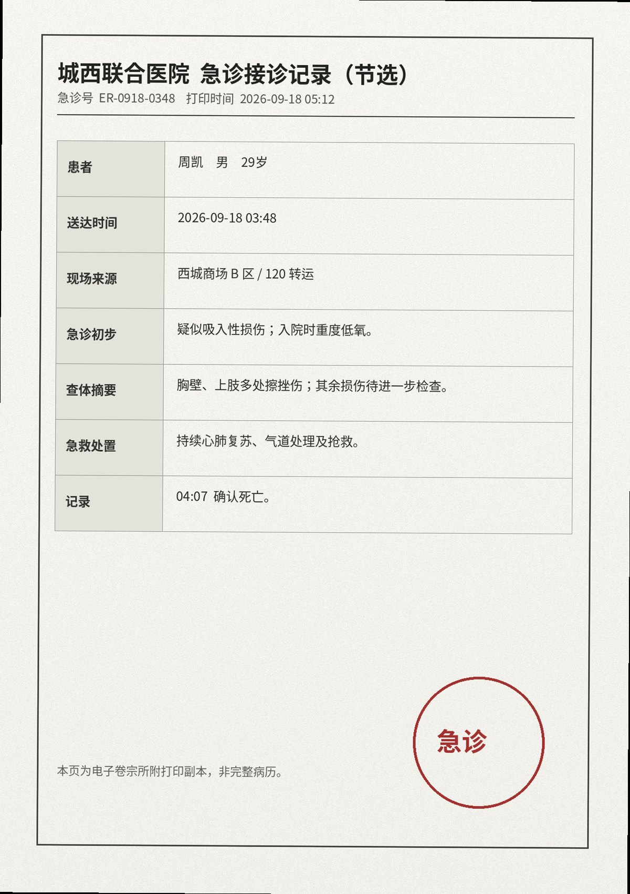

医疗与现场附件
急诊回执、遗物移交，以及从现场胸前相机缓存中提取出的自动语音转写。原始画面没有在归档镜像中开放。
急诊接诊回执

卷宗摘录：03:48 送达；急诊初步为疑似吸入性损伤、重度低氧，胸壁及上肢多处擦挫伤。04:07 确认死亡。
胸前相机 / 自动语音转写
设备只保留了低码率缓存。以下文字来自设备自动识别缓存。低置信度片段保留为空缺；归档人员未补写缺失内容。
有人吗？我按退出了啊。门怎么还不开……行了，别演了，真开不了。[门把拉动 ×2 / 随后连续敲门]
咳……等一下，这个味不对。你们不是说水雾吗？先开门，真的，先开一下。[后半句被咳嗽覆盖]
[低置信度] ……有人在外面吗？[连续咳嗽 / 敲门 / 空调风声]
我手机是不是在外面……要是响了，帮我——[后半句未识别；之后没有稳定人声]
遗物移交
01 手机一部，屏幕碎裂
02 家门钥匙一串
03 钱包及身份证件
04 活动腕带一条
05 现场胸前相机一部（04:22 由活动方补交）
02 家门钥匙一串
03 钱包及身份证件
04 活动腕带一条
05 现场胸前相机一部（04:22 由活动方补交）
EVT-9176 / 附件读取结束05:26 归档副本